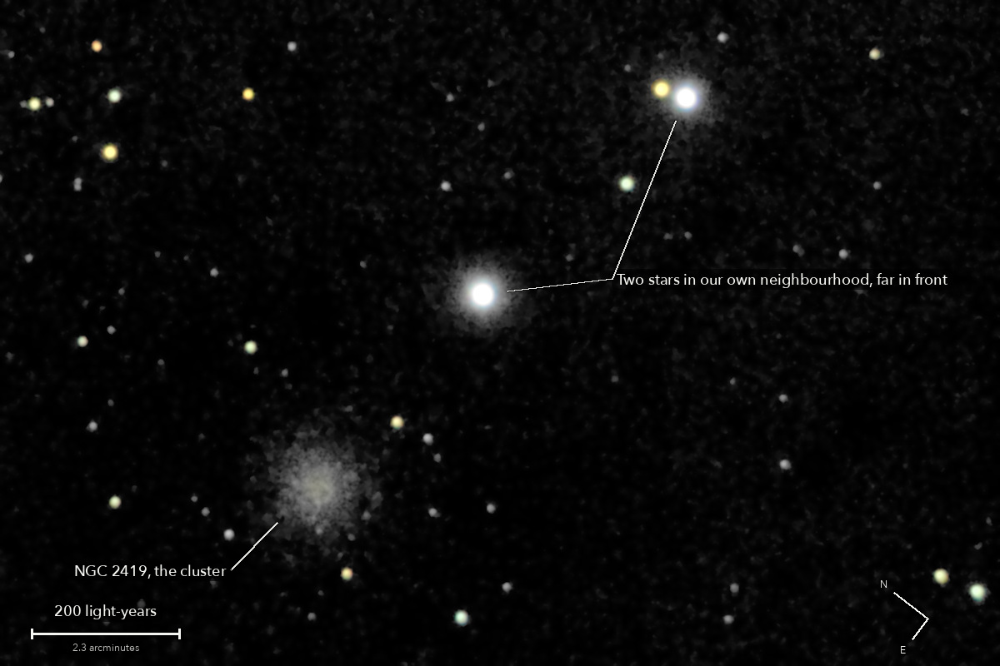

NGC 2419
A globular cluster in Lynx, at the far edge of our galaxy
A ball of hundreds of thousands of ancient stars, nearly twice as far away as the Large Magellanic Cloud, the Milky Way's big companion galaxy. It is so far out that it was once thought to be adrift between galaxies, and was called the Intergalactic Wanderer; in fact it orbits the Milky Way. The two bright stars beside it are in our own neighbourhood, hundreds or thousands of times nearer.
What you are looking at

Swipe sideways to see the rest. Tap the picture for full size.
- Distance
- About 300,000 light-years
- This picture spans
- About 1,400 light-years; the haze shown is about 200 across, and one pixel is more than a light-year
- The light left
- About 300,000 years ago, around when our own species first appears in the fossil record
- Honest note
- A short picture, partly through cloud: only the bright middle of the cluster shows, less than half its full width. Its speckle is real, but no single star can be picked out
For photographers
4.25 minutes of light, between patches of cloud.
- Exposures
- 17 x 15 s at ISO 3200: 4.25 minutes
- Frames
- 29 taken, 17 kept. All 12 dropped were lost to cloud: the run began and ended under thin cloud in patches, the stars dimmer under a brighter sky, with 13 clear frames in a row in the middle. Four thin frames, at 80 to 90 percent, are used, scaled up and weighted down
- Sampling
- 0.777 arcsec per pixel: one pixel per 2 x 2 colour cell, never enlarged. Stars 5.0 arcsec wide (half-flux)
- Field
- 15.5 x 10.4 arcmin: a 1200 x 800 crop from a stack of 38.7 x 25.6 arcmin, nothing resampled, not turned (north 52 degrees anticlockwise of up)
- When
- 13 October 2026, after midnight, over 15 minutes. About 60 degrees up
- Registration
- Rotation and shift on 84 to 86 stars, 0.31 to 0.42 sensor px rms; the field turned 0.40 degrees. The air spread red from blue by 0.32 arcsec: measured on the stars and taken out in the one resampling
- Calibration
- No darks and no flat frames were taken. The night's flat, built from the open sky of the NGC 891 run, and 53 dust shadows it left, measured on this run's own sky and divided out; nothing within 3 arcmin of the cluster was judged or changed. Hot pixels from the run itself
- Stacking
- RAW colour planes (no demosaic), hot pixels by 3 x 3 median, registered on stars with rotation, sigma-clipped weighted mean. One sky constant per colour per frame; in the picture only, a sky plane per colour is subtracted as well. Noise 3.7 to 3.8 times lower than one frame (4.1 expected from the weights)
- What is real
- A round haze, brightest at the centre (38 percent above the sky there) and falling to half at 22 arcsec. It stands above the sky over 2.1 arcmin, in the stack and in the odd and the even halves of the frames each alone; 2.5 against the sky just round it. The haze is grainy and the grain is real: of 36 points in it, 21 repeat in both halves, where chance would give about 2
- Not claimed
- Any single star of the cluster: each point is a bright giant, a blend of a few, or a star in front. Nor the catalogue's 4 to 6 arcmin: the outer part is too faint for 4.25 minutes. The sky round the cluster reads slightly low, so the width given is a lower limit
- Colour
- No saturation added. The haze is a faintly warm white, red : green : blue 1.10 : 1 : 0.81 in the camera's daylight white balance: the same, within the errors, as the field's stars. The two bright stars clip in every frame: they are shown white and were not repaired, and the glow round each is the telescope's own spread of their light
- Finish
- The camera's daylight white balance and colour matrix. Arcsinh stretch, black at the 75th percentile, S-curve 0.15. The dark sky is set near black and smoothed (median 3 px, bilateral 4 px), by choice: 8.3 percent of the picture is exactly black, and the haze's outermost ring fades into it
- Telescope
- Celestron 8SE Schmidt-Cassegrain: 203 mm aperture, 2,082 mm focal length by plate solve of this stack, f/10.3
- Camera
- Sony a6000, stock, at prime focus: APS-C 23.5 x 15.6 mm, 6000 x 4000, 3.9 micron pixels, RAW
- Mount
- Sky-Watcher EQ6-R, unguided. Set down without polar alignment, about 5 degrees off the pole; aligned from four plate-solved photos (about 1 arcminute), both axes driven from that model
© 2026 Brad Gessler · Celestron 8SE (8 inch, f/10.3) and Sony a6000 on an EQ6-R · San Francisco Bay Area · night of 12 October 2026
Capture and mount: Observatory (Elixir on a Raspberry Pi 3). Stacking: numpy, OpenCV, rawpy. Plate solving: astrometry.net. Stacked from the camera's RAW frames. Nothing generated.
© 2026 Brad Gessler. The pictures and the words are his own; all rights reserved.